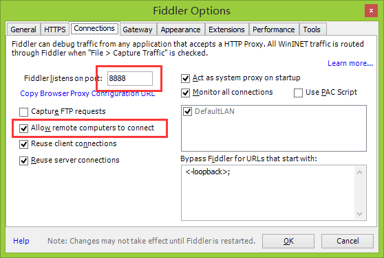
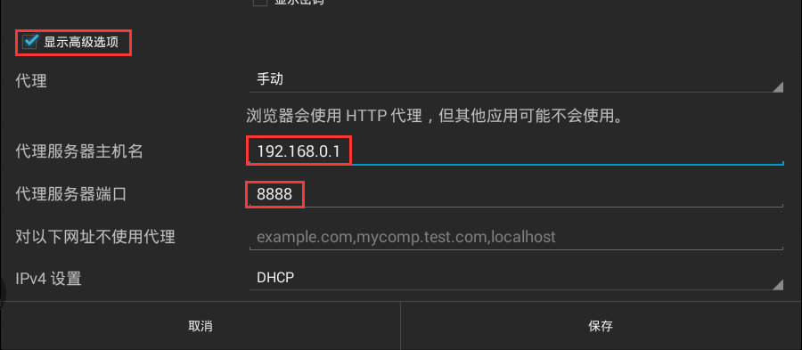
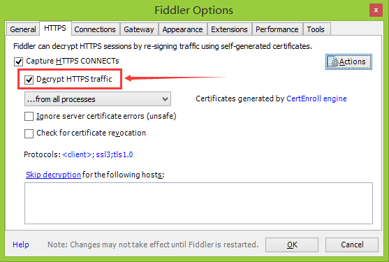
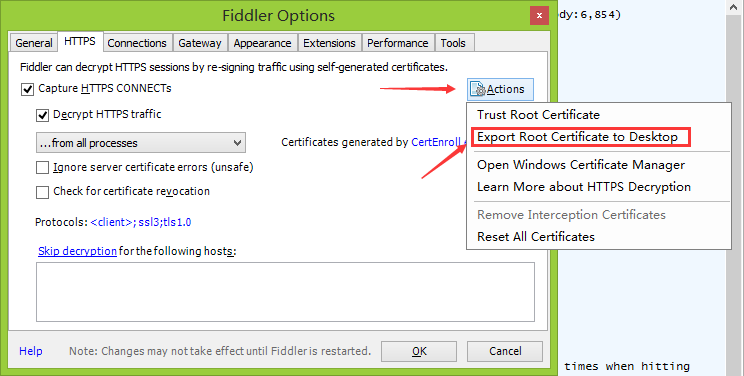
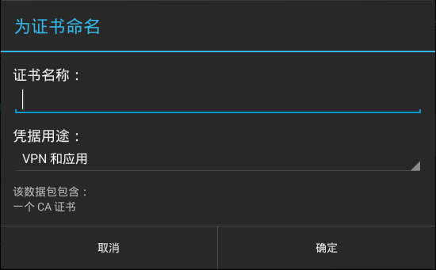

Fiddler是一个HTTP协议调试代理工具，在开发网络应用的时候经常会用到，其最基本的作用是能抓HTTP的数据包，当然它还有更高级的用法，如添加断点、修改请求与相应的数据等等。。。
基本用法
- 安装后配置端口：Tools->Fiddler Options->Connections->Fiddler listens on port: 8888（默认值）
- 勾选Allow remote computers to connect
 - 进入Android设备的WLAN连接，长按进入修改网络->显示高级选项->添加代理服务器IP和端口即可（运行Fiddler的那台机器）

这个时候Android设备上所有的HTTP请求就会通过Fiddler进行代理转发了，当然我们就可以在Fiddler上对数据包进行分析。。。
抓HTTPS包
最近项目里需要抓取Google Analytics的数据包进行分析，而GA的数据传输都是基于HTTPS的，用Fiddler进行抓包，命令行一直报Warnning，很明显就是由于证书没添加导致握手过程失败：1W/GAv4: Network compressed POST connection error: javax.net.ssl.SSLHandshakeException: java.security.cert.CertPathValidatorException: Trust anchor for certification path not found.
我们都知道，HTTPS协议是由SSL+HTTP协议构建的可进行加密传输、身份认证的网络协议，HTTPS需要申请CA证书，SSL通过CA证书来进行验证并对数据进行加密。
要让Fiddler支持HTTPS包的捕获，我们需要到设置里面将其打开，并把CA证书添加到系统中：
- 进入Tools->Fiddler Options->HTTPS，勾选Decrypt HTTPS traffic
 - 然后通过Actions按钮中的Export Root Certificate to Desktop导出证书文件
FiddlerRoot.cer，拷贝至sdcard，然后通过安全->凭据存储->从usb存储器安装添加证书。此时会弹出添加证书的Dialog，输入名字点击确定即可。（或者在Android设备通过浏览器进入http://192.168.xx.xx:8888/，点击最下方的FiddlerRoot certificate，然后会弹出添加证书的Dialog。）

 - 设置完后如果没生效把App重启一下再试试，在Fiddler的列表中应该已经出现HTTPS的数据包了。
注意：
若导入证书的时候弹出：“输入凭据存储的密码”，则需要先设置锁定屏幕PIN或密码才能使用凭据存储。